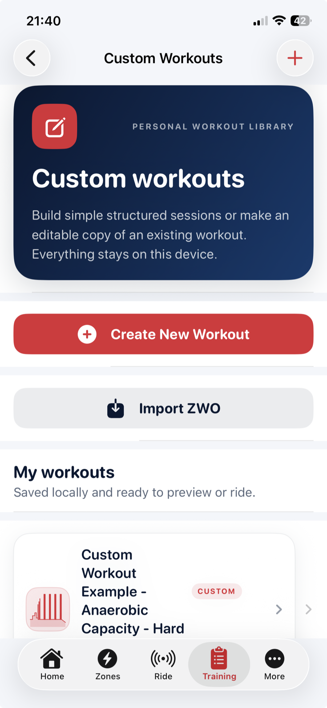
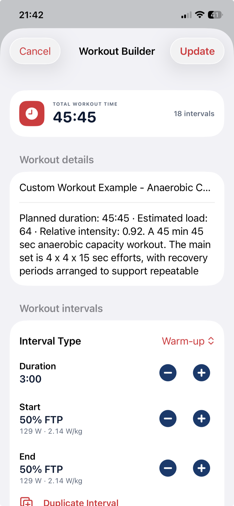
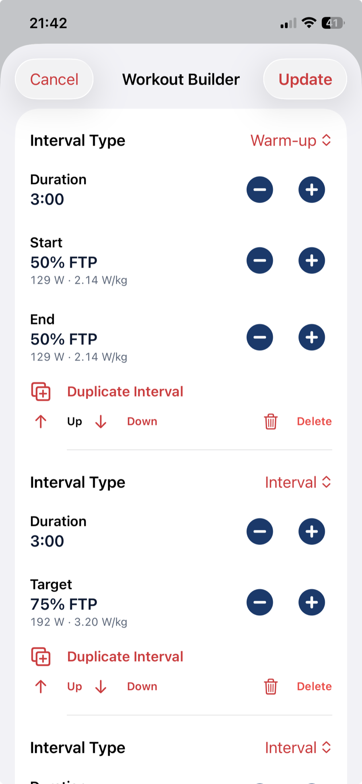
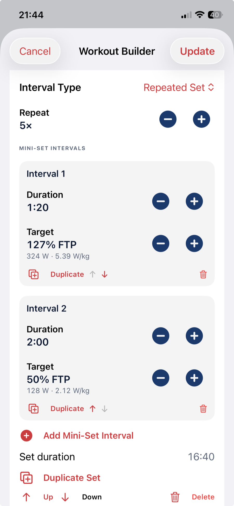
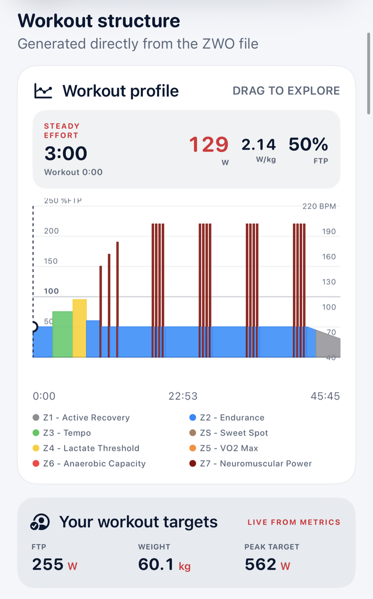

Choose or create
Start with the purpose of the workout.
Browse structured sessions by training zone or build your own locally saved workout. Compare the shape and duration, then see how every interval translates into targets based on your FTP and body weight.
Choose
Find a workout by the adaptation you want.
Browse a growing library organised by training zone. Descriptive names, duration, estimated load, intensity and miniature profiles make comparison quicker than guessing from an abstract workout title.
- Sort by duration, estimated load or alphabetically
- Workouts from recovery through anaerobic capacity
- FTP test protocols kept in their own section
- Compatible workout files translated into readable structure


Preview
See the shape of the work before committing to it.
Explore the workout graph interval by interval. Duration, watts, W/kg and percentage of FTP are calculated from the rider’s current profile, while the original structure remains visible and understandable.
Create
Build the workout you actually want to ride.
Custom Workouts turns an ordered interval list into a locally saved, .zwo-compatible workout file. Start from scratch or make an editable copy of a library workout; published Inside Edge workouts remain read-only.
- Create, reopen, rename and update your workouts
- Import compatible workout files from Files
- Swipe to delete custom workouts with confirmation
- Keep the entire personal library locally on the device

Workout Builder
Clear controls, live targets and a running total.
Set each interval as a percentage of FTP and immediately see its equivalent watts and W/kg. Five-second duration controls, live workout time and practical editing actions make the structure easy to refine.



Repeated sets
Make complex interval patterns simple to build.
A repeated set can contain several different efforts and recoveries—not just one on/off pair. Adjust each mini-interval, set the repetition count, then position or duplicate the complete block within the workout.
- Multiple efforts and recoveries inside one mini-set
- Live duration for the complete repeated block
- Duplicate, delete and reorder mini-intervals
- Duplicate or reposition the whole set
Preview
Check the finished workout before riding it.
The generated profile uses the same named training zones and colours as the rest of Inside Edge Ride. Drag across the graph to inspect each interval against the rider’s current FTP, body weight and calculated peak target.

Next: Connect
Turn the selected workout into a controlled ride.
Connect a compatible trainer and heart-rate monitor, then choose ERG control or a freer Passive ride.